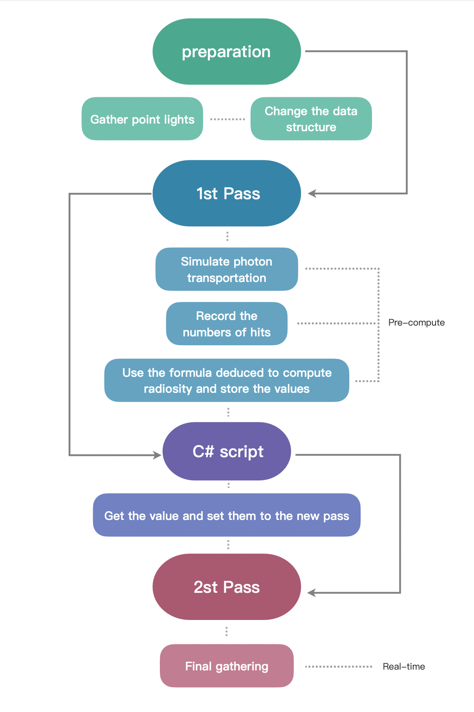
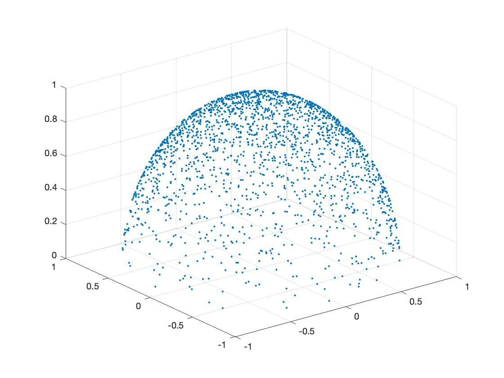
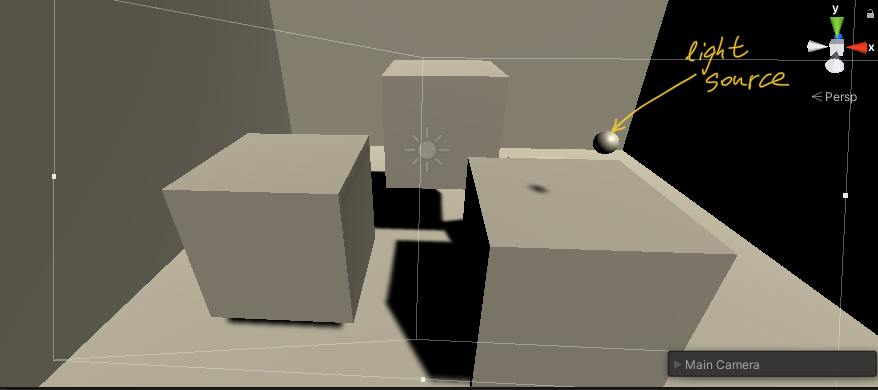
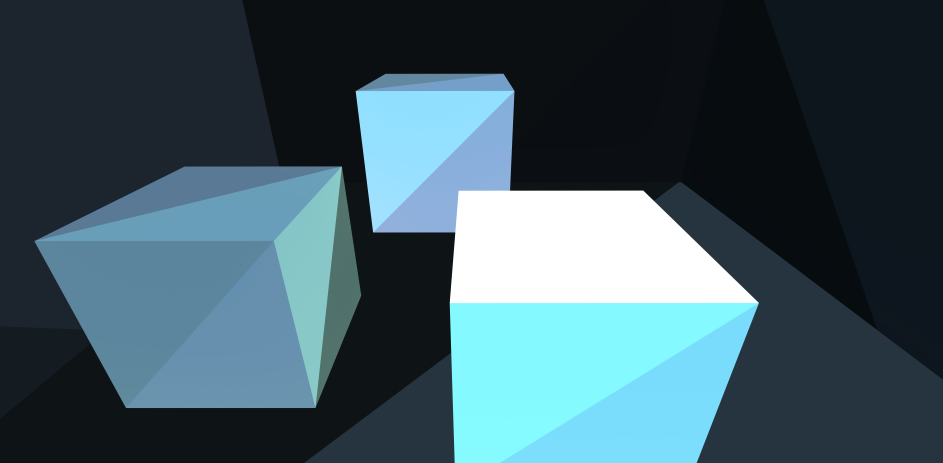
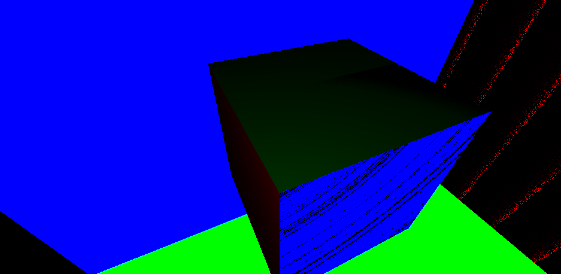

Implementation of radiosity method in Unity
Background and prerequisite
Ray-tracing techniques are being prevalent in today’s game industry. The realism of the environment and shading makes games become more like products of art. Some people may wonder how these compelling scenes and sequences are made after they play the games which support ray-tracing, so they start searching on the Internet and wind up with being lost in the ocean of intricate formulas and elusive theories. Well, for the beginners, this is inevitable, but after several days or weeks swimming in the convoluted “waterway”, people will finally understand, at least, the basic idea about ray-tracing, which is actually very simple: tracing, intersecting and reflecting. To compute them and finally calculate the RGB value of every pixel, we need some physical concepts like flux, radiance, radiosity, BRDF and so on. We will NOT discuss these basic concepts in this article because there are so many amazing tutorials on the Internet. And what we are talking about instead in this article, is a better algorithm to calculate the diffuse part of the light, generally called radiosity method.
First, we should understand why we need another ray-tracing algorithm and then which part of the traditional one can be ameliorated. For the ‘why’ question, the plain answer is that traditional ray-tracing algorithm is performance hungry. What we do in the traditional algorithm is to trace rays from camera simultaneously through every pixel of the view port. And for every ray, it needs to intersect the mesh and reflect to another one and keep doing that until it hits a light source. There are a lot of method recursions which consume huge amounts of storage. It may be necessary for the specular calculating because the specular changes when your observing position is changed, but is that also necessary in the calculation of the diffuse part? The answer is negative. The diffuse light generally doesn’t change when you alter the angle to observe an object. This means that if the environment and light source is set and keep unchanged, all the diffuse light will converge to a balance status, which means the diffuse light from every point on the objects’ surface is determined. This will be the answer of the ‘where’ question mentioned at the beginning: we can move the diffuse computation from the real-time process to the pre-computation process. This article will first repeat some concepts and mathematical deductions, and then share the program design based on Unity Engine, generally using C# and HLSL. Now, without further ado, let’s get started.
Relevant knowledge of radiosity method
Classic Radiosity Method
First of all, we need to have a quick look about the classic radiosity method(you can skip this part as you like because the method introduced in this chapter will NOT be used in our implementation, but it will help you understand the whole picture of radiosity method). The idea of classic radiosity method is:
1) Divide the objects in the scene into lots of patches;
2) Get the initial self-emitted radiosity and the reflectivity of each patches;
3) Construct a liner system and solve it (recursively);
The step 1 is lucid, and is actually already done when the objects are modeled in the computer, the framework of the objects is called meshes, and meshes are stored in the form of vertices and indices(at least in Unity). The step 2 is also not that difficult, the initial self-emitted radiosity is 0 if the patch is not the light source and could be any positive number if the patches is the light source. And when it comes to the reflectivity, it’s arbitrary, mostly it is stored in the “texture” property contingent upon people themselves. But the step 3 is a little bit hard to understand: how we construct the linear system? For every point in the scene, we already know the render equation:
\[L(x\rightarrowΘ)=L_e(x\rightarrowΘ)+\int_{Ω_x}f_r(x,Θ\leftrightarrowΘ^{\prime})L(x\leftarrowΘ^{\prime})cos(Θ^{\prime},N_x)\,dω_{Θ^{\prime}}\]
represents the self-emitted radiance,
is the direction from point x pointing to the camera,
is the inverse direction which the light may come along and hits on the point x.
is the hemisphere whose origin is point x and equator is on the micro-surface containing point x. The function
is the BRDF,
is the dot product of normalized
and the normal vector on x.
We can notice that in this render equation, the radiance which we receive from x depends on the direction of the view, which means that our observation position is a part of the input. But in the case of diffuse light,
and BRDF is constant values. And we can also change the term
to the form using all the surfaces in the scene:
And finally we can rewrite the render equation of diffuse part without direction:
\[L(x)= L_e(x)+\rho(x)\int_SK(x,y)L(y)dA_y\]
(1.1)
is the reflectivity on x,
,
is visibility function(1 if x and y are mutually visible, 0 otherwise),
is the distance between x and y,
is the direction that x points to y.
In the diffuse environment, radiance and radiosity has a relationship:
; so we can change equation 1.1 into radiosity form:
\[B(x)= B_e(x)+\rho(x)\int_SK(x,y)B(y)dA_y\]
Now we have the formula for every single point’s radiosity, but what we actually need is the radiosity of every patch.According to the definition of the radiosity and the relationship between the radiosity and radiance:
\[B_i=\frac{1}{A_i}\int_{S_i}L(x)\int_{\Omega_x}cos(\Theta,N_x)d\omega_\Theta dA_x\]
This formula can be reduced to:
\[B_i = \frac{1}{A_i}\int_{S_i}B(x)dA_x\]
(1.2)
Which means the radiosity of every patches is the average of the radiosity on every point on this patch. And with the equation 1.2, we can change equation 1.1 and solve it using . If you want to know the details, you can read a book
Advanced Global Illumination(second edition)
by
Philip Dutré
,
Bala and
Philippe Bekaert, page 154. To sum up, the radiosity of every patches can be presented by other patches in the scene:
\[B_i^\prime = B_{ei} + \rho_i \sum_j F_{ij}B_j^\prime\]
is the approximation value which will converge to
finally, factors
are called
patch-to-patch form factors, which describe the contribution of one patch to another one. After we deduce the linear system, we recursively solve them and stop when we think it’s enough.
The shortcoming of the classic radiosity method using form factors is that we need compute the form factors which is an onerous work, and we also need to store them so that we can use them.
Photon Density Estimation Methods
The good news is, we have an alternative way to approximate the radiosity of each patch, not by analytically solve the equations, but by simulating the photons transportation. To start with, we need to introduce a concept called random walks. Imagine that there is a new game on checkerboard without pieces, someone may put a pawn on the grid no.i with probability
(called source probability),
, n is the total number of the grids, and someone could move the pawn from grid i to j with probability
(called transition probability, the probability of moving from the the same grid doesn’t need sum to one), and if the pawn is in grid i, the pawn will be taken from the checkerboard with probability
(called absorption probability). The expected number of times the grid i is visited per random walk
. This is the discrete version of random walks, we also have the continuous one:
.
is the density which can be greater than 1.
OK! I think it’s time to apply these theories into our light transportation case. Suppose there is a particle on a light source, the location is
, we can define the source probability like this:
\[S(x_0)= \frac{B_e(x_0)}{P_{eT}}\]
is the total power emitted.
is the radiosity emitted on
. We divide radiosity with total power to normalize the source probability. Then for a particle direction
(in diffuse light model), we first define the transition probability given direction and position like this:
\[T(\Theta_0|x_0) = \frac{cos(\Theta_0,N_{x_0})}{\pi}\]
And if we consider the particle shot from and hit in direction
, the transition probability will become:
\[T(x_1|x_0,\Theta_0) = \frac{cos(-\Theta_0,N_{x_1})}{r_{x_0x_1}^2}V(x_0,x_1)\]
But the transition probability from patch to patch is what we really want in the random walks method we mentioned above, use the knowledge of probability:
\[T^\prime(x_1)=T(x_1|\Theta_0)T(\Theta_0)\]
and given the condition , the equation become:
\[T\prime(x_1|x_0)=T(x_1|\Theta_0,x_0)T(\Theta_0|x_0)\]
We have deduced the right side of the equation, so finally we get:
\[T\prime(x_1|x_0)=\frac{cos(Θ_{0},N_{x_0})cos(-Θ_{0},N_{x_1})}{\pi r_{x_0x_1}^2}V(x,y)\]
Which is exactly
mentioned in the previous part. But it’s not the final transition probability because we haven’t take absorption into account. We denote the absorption probability (on
)
, then the transition probability is:
\[T(x_1|x_0)=\frac{cos(Θ_{0},N_{x_0})cos(-Θ_{0},N_{x_1})}{\pi r_{x_0x_1}^2}V(x,y)\rho(x_1)\]
Now we can use the continuous random walks model to get the density
:
\[\chi(x) = S(x) + \int_s \chi(y)T(x|y)dA_y~{=}~\frac{B_e(x)}{P_{eT}} + \int_s \chi(y)K(y,x)\rho(x)dA_y~{=}~\frac{B(x)}{P_{eT}}\]
We can see that the expected number of the particle hits per unit area is proportional to the radiosity. And that means if we simulate the particle transportation as much as we can, by recording the number of hits, we can approximate the value of the radiosity. Use the Monte Carlo integration(if you have some problem about Monte Carlo Integration you can also look them up in Advanced Global Illumination p64 or any other text books or whatever, generally it’s a method to approximate an integral)
Recall the equation 1.2, using the Monte Carlo method, it can be transformed like this:
\[B_i = \frac{1}{A_i}\int_{S_i}B(x)dA_x~\approx~ \frac{1}{A_i}\frac{1}{N}\sum_{s=1}^{N}\frac{B(x_s)}{\chi(x_s)}\]
\[= \frac{1}{A_i} \frac{1}{N} \sum_{s=1}^{num~of~hits}\frac{B(x_s)}{B(x_s)/P_{eT}}~=~\frac{P_{eT}N_i}{NA_i}\]
So if we can get the total number of the simulation, the number of hits on each patch, the total power emitted and the area of each patch, we can approximate the value of radiosity of each patch.
Implementation in Unity Engine
Now I think it’s time to program, but because this sharing is not a basic Unity or C# tutorial, I’ll not do all the stuff from scratch. And actually there is a really great blog written by Three Eyed Games —
GPU Ray Tracing in Unity
, this is an amazing sharing, in this series of sharing, you can learn how to implement the classic ray-tracing method in Unity, I learned a lot from it, and the code I’ll share today is based on their code, so I strongly recommend you to read the blogs first if you get confused with the concepts of C#, compute shader and any thing else about ray-tracing.
Preparation
The first things we should do is to have a light source so that we can calculate the total power emitted and the subsequent stuff.

In C#, we first create a structure:
struct PointLight
{
public Matrix4x4 localToWorldMatrix;
public Vector3 position;
public float intensity;
}
Then, just as what Three-Eyed-Games does, we can also write a script to register the point light we want in the Unity scene. Create a C# script called RayTracingPL and write the following code:
public class RayTracingPL : MonoBehaviour
{
public float intensity ;
private void OnEnable()
{
RayTracingMaster.RegisterPL(this);
}
private void OnDisable()
{
RayTracingMaster.UnregisterPL(this);
}
}
And then we should send the structure into the compute buffer, so we need create a list and a compute buffer object:
private static List _pointLights = new List();
private ComputeBuffer _PointLightBuffer;
And in
Start() function, we add the following code to get all the point light properties we need such as position and intensity and set to the compute buffer:
Transform tran;
foreach (RayTracingPL PL in _rayTracingPLs)
{
PointLight pointLight = new PointLight();
tran = PL.GetComponent();
pointLight.position = tran.position;
pointLight.localToWorldMatrix = tran.localToWorldMatrix;
pointLight.intensity = PL.intensity;
_pointLights.Add(pointLight);
}
CreateComputeBuffer(ref _PointLightBuffer, _pointLights, 4 * 4 * 4 + 3 * 4 + 4);
RayTracingShader.SetBuffer(RayTracingShader.FindKernel("PRE"), "_lightObjects", _PointLightBuffer);
The function
CreateComputeBuffer() is a custom function defined in the code of Three Eyed Games, you can use it or just use
ComputeBuffer.SetData().
Then, in the compute shader, we first write a structure of point light which corresponds to the structure in C#, and create the
StructuredBuffer to receive the values sent from C# script:
struct PointLight
{
float4x4 localToWorldMatrix;
float3 position;
float intensity;
};
StructuredBuffer _lightObjects;
We also have to create a new kernel called “PRE” just like the origin “CSMain” and remove all the block in it. We leave this empty kernel aside for later use.
There is another thing to be considered: how we store the numbers of photon hits dynamically and where we store it? As I mentioned before, mesh objects is stored in computer by using vertices and indices array. The vertices array stores the position of each vertex. Each vertex has an index, and the indices array stores indices of every three vertices in a particular order, so that computer know which three vertices will form a triangle. So in the vertices array, every vertex should be stored only once, but in indices array, the index of each vertex will be stored for several times so that they can represent different patches. So if we want to store the average radiosity of every patch, we can use indices, by changing its data type from int to vector. Just because we also need the area of every patch to compute the radiosity, so we should extend it to Vector3, the first component stores the index number, the second component stores the hit number, and the third component stores the area. The values of the hit number and area may be the same among every three indices just because they represent the same patch. I used the code of Three Eyed Games and change it a little bit, and put them into Start(), this is the code in C#:
//get meshes
foreach (RayTracingObject obj in _rayTracingObjects)
{
Mesh mesh = obj.GetComponent().sharedMesh;//sharedMesh is passed by reference, which means once it's changed, all variables point to it change
//but Mesh, compared to SharedMesh, pass by value
//add vertex data
int firstVertex = _vertices.Count;
for (int i = 0; i < mesh.vertexCount; i++)
{
_vertices.Add(new Vector4(mesh.vertices[i][0], mesh.vertices[i][1], mesh.vertices[i][2], 0.5f));
}
//add index data -- if the vertex buffer wasn't empty before, the indices need to be offset
int firstIndex = _indices.Count;
//change the temporary int array indices to vector2 array
//var indices = mesh.GetIndices(0);
Vector3[] indices = new Vector3[mesh.GetIndices(0).Length];
//then assign each component the value of (index,0.5)
for (int i = 0; i < mesh.GetIndices(0).Length; i++)
{
indices[i] = new Vector3(mesh.GetIndices(0)[i] + firstVertex, 0.5f , 100.0f);
//the reason why I set the initial number of hits as 0.5 is that I want to test if the
//patch has been hit or not, and for the same reason, I set the initial area as 100
//because in my test scene, I’m sure that no patch is larger than 100
}
//change the _indices for add each component we changed already
//_indices.AddRange(indices.Select(index => index + firstVertex));
_indices.AddRange(indices);
//Add the object itself
_meshObjects.Add(new MeshObject()
{
localToWorldMatrix = obj.transform.localToWorldMatrix,
indices_count = indices.Length,
indices_offset = firstIndex,
_albedo = obj.albedo,
_specular = obj.specular,
_smoothness = obj.smoothness,
_emission = obj.emission
});
}
CreateComputeBuffer(ref _meshObjectBuffer, _meshObjects, 72 + 3 * 4 * 3 + 4);
CreateComputeBuffer(ref _vertexBuffer, _vertices, 16);
CreateComputeBuffer(ref _indexBuffer, _indices, 12);
RayTracingShader.SetBuffer(RayTracingShader.FindKernel("PRE"), "_MeshObjects", _meshObjectBuffer);
RayTracingShader.SetBuffer(RayTracingShader.FindKernel("PRE"), "_Indices", _indexBuffer);
RayTracingShader.SetBuffer(RayTracingShader.FindKernel("PRE"), "_Vertices", _vertexBuffer);
You may notice that I also change the vertices into
Vector4, well that’s a mistake I made before I noticed that vertices were not suitable to store the information for every patch. You can change it back to
Vector3, but you should make sure you also change the stride when you set values and the corresponding data in compute shader.
Use 1st Pass to compute the radiosity
After we get the preparation done, what we need to do next is to create a method to shoot the photon, so in the compute shader, I create a function called CreatePointLightRay(), and pseudo-uniformly sample the hemisphere direction, the reason I call it ‘pseudo’ is because I’ll send the arbitrary value as the input of the function but not the random one so that I can make sure that every corner of the hemisphere is exactly sampled:
Ray CreatePointLightRay(PointLight lightSor, float idx, float idy)
{
//uniformly sample hemisphere direction(My own way to sample)
float phi = 2 * PI * idy;
float theta = acos(1 - idx);
float3 directionInObj= float3(sin(theta) * cos(phi), sin(theta) * sin(phi), cos(theta));
float3 origin = lightSor.position;
//float3 directionInObj = float3(sin(theta)*cos(phi), sin(theta)*sin(phi), cos(theta));
float3 direction = mul(lightSor.localToWorldMatrix, float4(directionInObj, 0.0f)).xyz;
return CreateRay(origin, direction);
}
Then we need to intersect the patches and record the number of the hits and other data to calculate the radiosity. What we need first is a container to store the total number of hits. Create an
int array called _NR represent the Red channel(in my program, I separate the radiosity into three parts:R,G and B). This is a
RWStructureBuffer so that we can read and write. So in C# script, we create the list with only one element 0, and set it to the compute buffer:
private static List _NR = new List();
private static int[] nR = new int[1];
private ComputeBuffer _NRBuffer;
And in
Start(), we add the following code just after what we have written before:
_NR.Add(0);
CreateComputeBuffer(ref _NRBuffer, _NR, 4);
RayTracingShader.SetBuffer(RayTracingShader.FindKernel("PRE"), "_NR",_NRBuffer);
And in compute shader, we create a function called
PhotonTransitionR(), in this function, we test if a photon will hit the patch, and test if it is absorbed or is reflected to another direction. The absorption probability is connected with the albedo value, the higher the albedo is, the more possible the photon will be reflected. And if the photon is reflected, the direction which it heads to should be chosen according to the outgoing cosine. So there is another problem about sample hemisphere weighted by cosine. Let’s solve it first:
Sampling hemisphere weighted by cosine
Consider a vector
v with length 1, the probability density function(PDF) of uniform distribution in hemisphere should be
. If we want it distributes weighted by the angle formed by the vector v and the normal vector of plane where the equator lands, we just multiple the right side with the cosine factor, like this:
\[f(v)~=~\frac{\alpha}{2\pi}cos(N,v)\]
The reason why we add
is because we should normalize the sample space so that the whole probabilities sum up to 1. So we can get
by solving this equation:
\[\int_{hemisphere}\frac{\alpha}{2\pi}cos(N,v)dA = 1\]
is actually
in spherical coordinate,
is the vertical angle. And we change this integral into double integral with respect to
and
:
\[\int_{0}^{2\pi}\int_{0}^{\frac{\pi}{2}} \alpha cos(\phi)sin(\phi)d\phi d\theta = 2\pi\]
And we can end up with
= 2; hence:
\[f(v)=\frac{cos(\phi)}{\pi}\]
But in our program, we need two inputs
and
, so we should change the PDF into two marginal PDFs which only contain
and
respectively. Notice that
\[f(v)sin\phi d\phi d\theta = f(v)dA = g(\phi,\theta)d\phi d\theta\]
Cancel
, we get
:
\[g(\phi,\theta)= f(v)sin(\phi)=\frac{1}{\pi}sin(\phi)cos(\phi)\]
So we integral
with respect to
and
:
\[g(\phi)=\int_{0}^{2\pi}g(\phi , \theta)d\theta~=~2sin(\phi)cos(\phi)\]
\[g(\theta)=\int_{0}^{\frac{\pi}{2}}g(\phi ,\theta)d\phi~=~\frac{1}{2\pi}\]
Now we know that if we have a uniform random number generated in [0,1], we can instantly sample
by using the formula
, but what about
? Here is a method call
Inverse Transform Sampling. First, we should calculate the cumulative distribution function(CDF) of
:
\[G(\phi)=\int_{0}^{\phi}g(\phi')d\phi'~=~2\int_{0}^{\phi}sin\phi'cos\phi'd\phi'~=~sin^2\phi\]
Because
is a uniform random number in [0,1], so
\[G(\phi) = Pr(u\le G(\phi))\]
then
\[G(\phi) = Pr(G^{-1}(u)\le \phi)\]
but remember the definition of CDF:
\[G(\phi) = Pr(\phi'|\phi' \le \phi)\]
so
has the same distribution as
's, which means
\[G(\phi) = Pr(u = G(\phi)\]
therefore
\[u = sin^2\phi\]
\[\phi = arcsin(\sqrt{u})\]
(2.1)
OK, so if we have a uniform random number
, we can get
by using formula 2.1. we can verify it in
Matlab, if you copy the following code and paste it into
Matlab and execute it:
theta = zeros(2000,1);
for i = 1:2000
theta(i,1) = 2 * pi * rand(1);
end
phi = zeros(2000,1);
for j = 1:2000
phi(j,1) = asin(sqrt(rand(1)));
end
x = zeros(2000,1);
y = zeros(2000,1);
z = zeros(2000,1);
for n = 1 : 2000
x(n) = sin(phi(n))*cos(theta(n));
y(n) = sin(phi(n))*sin(theta(n));
z(n) = cos(phi(n));
end
plot3(x ,y, z,'.')
grid on
You will get the following picture:

We can see the random points cluster more around the normal direction and less above the equator, which is exactly what we expect.
So in compute shader, we create a function called
SampleHemisphereCos(), and construct it like this:
float3 SampleHemisphereCos(float3 normal)
{
float theta = 2 * PI * rand();
float phi = asin(sqrt(rand()));
float3 tangentSpaceDir = float3(cos(theta) * sin(phi), sin(theta) * sin(phi), cos(phi));
return mul(tangentSpaceDir, GetTangentSpace(normal));
}
Next, we start counting the number of hits, create a function in compute shader called
PhotonTransitionR(), it will return a bool value implying if the photon visits a patch or not, if it does, the function returns true, and by using keyword
inout, we change the origin Ray and RayHit, so that we can keep tracing the photon until it is absorbed. The code is like this:
bool PhotonTransitionR(inout Ray ray, inout RayHit bestHit, StructuredBuffer _meshObject)
{
//test if there is a photon reflect
bool c = false;
Ray initRay = ray;
//get all mesh objects registered in the scene
uint count, stride;
_MeshObjects.GetDimensions(count, stride);
//for every mesh object, we test the photon-triangle intersection
for (int m = 0; m < count; m++)
{
//get the offset of the correspondent mesh object so that we can access the indices we want
uint offset = _MeshObjects[m].indices_offset;
uint count = offset + _MeshObjects[m].indices_count;
for (uint i = offset; i < count; i += 3)
{
//map the vertices from Object Space into World Space
float3 v0 = (mul(_MeshObjects[m].localToWorldMatrix, float4(_Vertices[_Indices[i].x].xyz, 1))).xyz;
float3 v1 = (mul(_MeshObjects[m].localToWorldMatrix, float4(_Vertices[_Indices[i + 1].x].xyz, 1))).xyz;
float3 v2 = (mul(_MeshObjects[m].localToWorldMatrix, float4(_Vertices[_Indices[i + 2].x].xyz, 1))).xyz;
//compute patch area by using cross product
/*
float3 v0v1 = float3(v1.x - v0.x, v1.y - v0.y, v1.z - v0.z);
float3 v0v2 = float3(v2.x - v0.x, v2.y - v0.y, v2.z - v0.z);
_Indices[i].z = 0.5f * length(cross(v0v1, v0v2));
*/
_Indices[i].z = 0.5f * length(cross(v0, v1) + cross(v1, v2) + cross(v2, v0));
float t, u, v;
//ray-triangle intersection
if (IntersectTriangle_MT97(initRay, v0, v1, v2, t, u, v))
{
if (t > 0 && t < bestHit.distance)
{
//random number for survival test
float phiR = rand();
//if absorbed then stop
if (phiR >= _MeshObjects[m]._albedo.x)
{
bestHit.distance = t;
bestHit.position = ray.origin + t * ray.direction;
}
//if survival
else
{
bestHit.distance = t;
bestHit.position = ray.origin + t * ray.direction;
bestHit.normal = normalize(cross(v1 - v0, v2 - v0));
//find the new photon direction according to outgoing cosine
ray.direction = SampleHemisphereCos(bestHit.normal);
//update the origin of the ray and add a tiny offset along the ray direction in case of the self-intersection
ray.origin = bestHit.position + 0.01 * ray.direction;
//if _Indices[i].y == 0.5, that means the patch which contain the index haven't been visited by any photon yet
if (_Indices[i].y == 0.5f)
{
_Indices[i].y = 1.0f;
}
else
{
_Indices[i].y += 1.0f;
}
bestHit.specular = _MeshObjects[m]._specular;
bestHit.smoothness = _MeshObjects[m]._smoothness;
bestHit.emission = 0;
//change the test result to true
c = true;
//return c;
break;
}
}
else
continue;
}
else
continue;
}
}
//if c==true, that means photon is reflected, so the total number of visit should be added by one
if (c == true)
_NR[0] += 1;
return c;
}
The ‘R’ appended to the function represents that this function is just for testing in R channel, so we should also create the same functions for G and B channels. Because the every patch has three indices, so we can store the numbers of hits of three channels by placing then in three indices respectively. In my case, I take first index for R value, second index for G value and third index for B value. And just like what I said before, this is only one test, we need test the survival until the photon is absorbed, so we need another function, I call it
lightTransportR()
void lightTransportR(inout Ray ray, inout RayHit bestHit, StructuredBuffer _meshObjects)
{
bool tR = PhotonTransitionR(ray, bestHit, _meshObjects);
while(tR==true)
{
tR = PhotonTransitionR(ray, bestHit, _meshObjects);
}
}
We also need the transport function for G and B. And after doing that, we should apply them on the point light and start the simulation. In C#
Start(), we add the following code to dispatch the treads we need:
int threadGroupsX = Mathf.CeilToInt(2000 / 8.0f);//theta 0~PI
int threadGroupsY = Mathf.CeilToInt(2000 / 8.0f);//phi 0~2PI
RayTracingShader.Dispatch(RayTracingShader.FindKernel("PRE"), threadGroupsX, threadGroupsY, 1);
I partition the span of
and
into 2000 sub-span, and pick the maximum value of every sub-span as the sample direction, and these values are connected to the ID of threads, so that this photon transportation can be simulated simultaneously.
We create a function called
finalCounting() in compute shader:
void finalCounting(PointLight pl, int idx, int idy)
{
Ray rayR = CreatePointLightRay(pl, ((float) (idx)) / 2000.0f, ((float) (idy)) / 2000.0f);
RayHit bestHitR = CreateRayHit();
Ray rayG = CreatePointLightRay(pl, ((float) (idx)) / 2000.0f, ((float) (idy)) / 2000.0f);
RayHit bestHitG = CreateRayHit();
Ray rayB = CreatePointLightRay(pl, ((float) (idx)) / 2000.0f, ((float) (idy)) / 2000.0f);
RayHit bestHitB = CreateRayHit();
lightTransportR(rayR, bestHitR, _MeshObjects);
lightTransportG(rayG, bestHitG, _MeshObjects);
lightTransportB(rayB, bestHitB, _MeshObjects);
}
And in kernel PRE, which we created before, we add the following code:
uint count, stride;
_lightObjects.GetDimensions(count, stride);
for (int i = 0; i < count; i++)
finalCounting(_lightObjects[i],id.x, id.y);
After doing so, we can run the game, the number of hit on each patch and the total numbers of hits in three channels will be stored in the compute buffer.
That is the whole picture of the 1st Pass, what we actually do is gathering the numbers of hits and other arguments we need and store them for later use.
Get the values from 1st Pass and send it to 2nd Pass
Maybe some readers will ask a question after reading the previous part: why you just gather the values but not compute the radiosity out? Well, that’s because the threads work in the same time, only when the whole pass is finished, the values stop changing. We can create another pre-compute pass to complete the calculation, which is better, but in my program, I just merge it into the 2nd Pass for the sake of ease.
So the works should be done in this part is first taking the values we stored in the 1st pass out. In C#, we create arrays for numbers of hits, indices and mesh objects:
private static Vector3[] ind;
private static MeshObject[] mesPre;
private static int[] nR = new int[1];
private static int[] nG = new int[1];
private static int[] nB = new int[1];
And in
Start(), we add the following code:
ind = new Vector3[_indices.Count];
_indexBuffer.GetData(ind);
mesPre = new MeshObject[_meshObjects.Count];
_meshObjectBuffer.GetData(mesPre);
_NRBuffer.GetData(nR);
_NRBuffer.GetData(nG);
_NRBuffer.GetData(nB);
Here is another question readers may ask: the mesh objects do not change in the whole Pass, why we need to read the mesh information from the compute shader but not from C# directly? Before I run the program, I also think in that way, but unfortunately, I met an unexpected problem that some indices didn’t point to the right vertices and some objects in final output had a weird shape. Till now, I still don’t know why, but after taking the information from the compute shader, the problem is fixed.
Then we need to put all the values we need into 2nd Pass, which will be executed in real-time. So the next step is to set the values into 2nd Pass, we change the original function
RebuildMeshObjectsBuffers() written by Three-Eyed-Games:
private void RebuildMeshObjectBuffers()
{
if (!_meshObjectNeedRebuilding)
{
return;
}
_meshObjectNeedRebuilding = false;
_currentSample = 0;
//Clear all lists
_meshObjects.Clear();
_vertices.Clear();
_indices.Clear();
//loop over all objects and gather their data
foreach (RayTracingObject obj in _rayTracingObjects)
{
for (int i = 0; i < mesh.vertexCount; i++)
{
_vertices.Add(new Vector4(mesh.vertices[i][0], mesh.vertices[i][1], mesh.vertices[i][2], 0.5f));
}
_meshObjects.AddRange(mesPre);//using the data computed in the previous pass
}
_indices.AddRange(ind);//using the data computed in the previou pass
CreateComputeBuffer(ref _meshObjectBuffer, _meshObjects, 72 + 3 * 4 * 3 + 4);
CreateComputeBuffer(ref _vertexBuffer, _vertices, 16);
CreateComputeBuffer(ref _indexBuffer, _indices, 12);
Vector4[] verticesChanged = new Vector4[_vertices.Count];
_vertexBuffer.GetData(verticesChanged);
}
And in SetShaderParameters() we also change the code as follow:
And in Render(), we also change the code a little bit:
private void Render(RenderTexture destination)
{
//Make sure we have a current render target
InitRenderTexture();
//Set the target and dispatch the compute shader
RayTracingShader.SetTexture(RayTracingShader.FindKernel("PassOne"), "Result",_target);
int threadGroupsX = Mathf.CeilToInt(Screen.width/8.0f);
int threadGroupsY = Mathf.CeilToInt(Screen.height/8.0f);
RayTracingShader.Dispatch(RayTracingShader.FindKernel("PassOne"), threadGroupsX,threadGroupsY,1);
//Bilt the result texture to the screen
if(_addMaterial ==null)
_addMaterial = new Material(Shader.Find("Hidden/AddShader"));//create a material and put the shader in the material
_addMaterial.SetFloat("_Sample",_currentSample);
Graphics.Blit(_target,_converged,_addMaterial);
//the reason why we double blit the texture is that we want to first transfer
//the image to _converged(because we will process the image for precision reason)
//and after we get the image done, we then send the texture to the screen
Graphics.Blit(_converged, destination);
_currentSample++;
}
Compute in 2nd Pass
Let’s go back to the theoretical stage for a moment, to clarify the difference between classic algorithm and the radiosity method. For the classic one, the following picture depicts the whole process:

The computation of classic ray-tracing method
Every time the eye ray is reflected, we need a sampling on hemisphere to determine the next sampling point until it is reflected to the light source.
But the according to the radiosity method:

The computation of the photon density estimation
Every patch now is a kind of light source, so the color value of a single pixel is the self-emission of the patch it hits plus the average value of the emission which the other patches contribute to this point. So for every pixel, the eye ray need to be reflected and sampled on hemisphere for only once.
After figuring out how we calculate the color for each pixel, we can now start programing in compute shader. First, we add a new function called
IntersectMeshObjectRadiosity() for calculating the radiance (how bright a point is), remember that in the diffuse case, radiosity and radiance has the following relationship:
\[B(x) = \pi L(x)\]
The code is like this:
void IntersectMeshObjectRadiosity(Ray ray, inout RayHit bestHit, MeshObject meshObject)
{
float totalPower;
uint num, stride;
_lightObjects.GetDimensions(num,stride);
for (int p = 0; p < num; p++)
totalPower += _lightObjects[p].intensity;
bool b = false;
uint offset = meshObject.indices_offset;
uint count = offset + meshObject.indices_count;
for (uint i = offset; i < count; i += 3)
{
float3 v0 = (mul(meshObject.localToWorldMatrix, float4(_Vertices[_Indices[i].x].xyz, 1))).xyz;
float3 v1 = (mul(meshObject.localToWorldMatrix, float4(_Vertices[_Indices[i + 1].x].xyz, 1))).xyz;
float3 v2 = (mul(meshObject.localToWorldMatrix, float4(_Vertices[_Indices[i + 2].x].xyz, 1))).xyz;
float t, u, v;
if (IntersectTriangle_MT97(ray, v0, v1, v2, t, u, v))
{
if (t > 0 && t < bestHit.distance)
{
bestHit.distance = t;
bestHit.position = ray.origin + t * ray.direction;
bestHit.normal = normalize(cross(v1 - v0, v2 - v0));
bestHit.albedo.r = saturate(totalPower / PI * _Indices[i].y / (_NR[0] * _Indices[i].z));
bestHit.albedo.g = saturate(totalPower / PI * _Indices[i + 1].y / (_NG[0] * _Indices[i + 1].z));
bestHit.albedo.b = saturate(totalPower / PI * _Indices[i + 2].y / (_NB[0] * _Indices[i + 2].z));
}
}
}
}
Now we have had the function to calculate the hit point’s self-emitted radiance. Then, we should create a function to compute the radiosity of other patch contributing to the point. We create a function called
ShadeRadiosity():
float3 ShadeRadiosity(Ray sampleRay, RayHit firstHit, RayHit bestHit)
{
//bestHit.albedo stores the value of radiosity of the specified patch, because of the diffuse case, we divide by PI to obtain the RADIANCE.
//bestHit.normal and firstHit.normal are the normalized vectors can be taken as the cosine factor
//finally we divide by distance^2
float3 energy;
energy.r = firstHit.albedo.r * saturate(abs(dot(bestHit.normal, sampleRay.direction) * abs(dot(firstHit.normal, sampleRay.direction))) / (bestHit.distance * bestHit.distance));
energy.g = firstHit.albedo.g * saturate(abs(dot(bestHit.normal, sampleRay.direction) * abs(dot(firstHit.normal, sampleRay.direction))) / (bestHit.distance * bestHit.distance));
energy.b = firstHit.albedo.b * saturate(abs(dot(bestHit.normal, sampleRay.direction) * abs(dot(firstHit.normal, sampleRay.direction))) / (bestHit.distance * bestHit.distance));
return energy;
}
The reason that I use
Saturate() is because if the distance of two point is too close, the color value will explode because the value in the denominator is too small. Finally, we should create the 2nd Pass ‘PassOne’ mentioned before:
[numthreads(8,8,1)]
void PassOne(uint3 id : SV_DispatchThreadID)
{
_Pixel = id.xy;
//Get the dimensions of the RenderTexture
uint width, height;
Result.GetDimensions(width, height);
//Transform pixel to [-1,1] range
float2 uv = float2((id.xy + _PixelOffset) / float2(width, height) * 2.0f - 1.0f);
//get a ray for the UVs
Ray Cray = CreateCameraRay(uv);
float3 result = float3(0, 0, 0);
RayHit bestHit = CreateRayHit();
bestHit = TraceWithObj(Cray);
//float distance = bestHit.distance;
RayHit firstHit = bestHit;
bestHit.distance = 1.#INF;
float3 dir = SampleHemisphere(firstHit.normal, 0);
Ray sampleRay;
sampleRay.origin = firstHit.position + float3(0.1f*dir.x,0.1f*dir.y,0.1f*dir.z);
sampleRay.direction = dir;
sampleRay.energy = float3(1, 1, 1);
uint count, stride;
_MeshObjects.GetDimensions(count, stride);
for (int i = 0; i < count; i++)
{
IntersectMeshObjectRadiosity(sampleRay, bestHit, _MeshObjects[i]);
}
//L(x) = Le(x) + fr(x)* ∑ Lj~ * ∫ G(x,y)V(x,y) dAy
result.r += firstHit.emission.r + firstHit.albedo.r * ShadeRadiosity(sampleRay, firstHit, bestHit).r / PI;
result.g += firstHit.emission.g + firstHit.albedo.g * ShadeRadiosity(sampleRay, firstHit, bestHit).g / PI;
result.b += firstHit.emission.b + firstHit.albedo.b * ShadeRadiosity(sampleRay, firstHit, bestHit).b / PI;
Result[id.xy] = float4(result, 1);
}
This kernel is similar to the origin kernel in Three-Eyed-Games, I just replace the value of color by using the radiosity divided by
.
Congrats! We have finished all the programing now, and if you create some cubes and some objects as lights, attach the RayTracingObject and RayTracingPL to the objects and lights you want to shade, set the albedo or intensity of each objects and run the game, you will get the scene like this:


We can see the cubes are shaded as patches, I suppose this may not the result some people want for it’s not smooth and even ugly. Well that’s because we take the patches as the texture of the objects. Actually, we need to use interpolation and other techniques to rewrite the texture so that the objects will become more real. Maybe I will share it in the next article. And you may have the outputs like this:

For this problem, you should check if you take
* operator as
dot() function when you want a dot product of two vectors. And for the problem that there is black and white shades on the objects at the beginning and soon become totally white, that’s because the origin of the ray is on the patch so it always self-intersect, the solution is giving the origin a little offset along the ray direction, so we can avoid the self-intersection.
Well, there are still some bugs in the program, but the main purpose of this article is to share an implementation of Photon Density Estimation Method. Hope that can help you or inspire you a little bit.
After getting through the bumps along the way, it’s time to say goodbye. Feel so happy to make this sharing and wish I can see you next time, by the way, I've exported my own program from Unity as a package and uploaded it on the GitHub,
https://github.com/PiErRehakule/PDEM-in-Unity, feel free to download it.